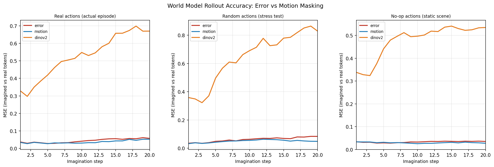

What You Imagine Is What You Learn:
Masking Strategies, World Model Fidelity,
and MPC-Based Reinforcement Learning
Research Demonstration · 2026
Abstract
Current approaches to deep reinforcement learning in visually complex environments typically rely on massive datasets and reactive, model-free policy networks. These reactive agents often struggle with long-horizon tasks and sample efficiency, as they lack an explicit understanding of the physical rules governing their environment. To address this, we propose a rigorous, three-phase training curriculum that discards reactive policies entirely in favor of an active, dynamic planner.
Our architecture transitions the agent from passive visual observation to active planning. In Phase 0, the agent learns a physics-aware latent space via a V-JEPA like objective with dynamic masking strategies (Error-Based and Motion-Weighted). In Phase 1, a Recurrent State-Space Model (RSSM) learns environment causality and dynamics through random interactions. Finally, in Phase 2, the agent utilizes Model Predictive Control (MPC) to reason over imagined futures at every decision step, driven by a Reward Predictor and a Value MLP trained strictly on real environment transitions. We demonstrate that domain-specific visual-temporal pretraining is strictly necessary; without it, state-of-the-art vision foundation models like DINOv2 suffer catastrophic imagination drift. Furthermore, our dynamic masking strategies yield highly stable, long-horizon world models capable of sustaining rigorous MPC planning.
Architecture Review
This work presents a three-phase training curriculum that progressively builds an agent capable of long-horizon latent planning in a first-person environment. The agent never learns a reactive policy. Instead, it learns an increasingly faithful internal simulation of the world and uses Model Predictive Control (MPC) to reason over imagined futures at every step.
Phase 0: Encoder Pretraining using JEPA-like Objective

Before observing a single reward, the agent must learn the visual structure of its world. Phase 0 trains a CNN Encoder and a Video Predictor on 8 hours of raw, unlabelled Doom gameplay sourced from YouTube, downsampled to 7.5 FPS and stripped of HUDs, yielding over 300,000 consecutive frame pairs.
Training proceeds through a dual objective designed to prevent lazy representation learning. First, spatial input masking blacks out 50% of input patches per frame, forcing the predictor to infer missing content from visible context alone, thus learning object permanence and global scene structure rather than local texture interpolation. Second, the prediction loss is not applied uniformly. Two masking strategies can be compared as ablations.
By the end of Phase 0, the encoder has developed a physics-aware latent space with no knowledge of actions or rewards.
Computes per-patch importance weights from inter-frame token differences, EMA-smoothed with decay $\alpha = 0.7$:
This forces the encoder to model moving entities but renders it blind to stationary threats.
Replaces motion signals with the predictor's own detached per-patch MSE from the previous training step:
Structurally complex objects such as a stationary monster are inherently harder to predict than flat walls and naturally generate high error, forcing the encoder to dedicate capacity to tactically important regions regardless of motion.
Phase 1: RSSM Dynamics Pretraining

Phase 1 teaches the agent causality: how actions manipulate the latent representations learned in Phase 0. The agent collects 5,000 episodes under a random policy with sticky actions (3–8 step repeats) to generate coherent motion trajectories. The full world model (Encoder projection head, RSSM, and JEPA Predictor) is trained jointly.
RSSM Belief State. The RSSM maintains a two-part belief at every timestep. The deterministic component $h_t \in \mathbb{R}^{512}$ is produced by a BlockGRU with LayerNorm applied to the hidden state output for gradient stability: $h_t = \mathrm{LayerNorm}(\mathrm{GRU}(h_{t-1}, [z_{t-1};\, \phi_a(a_{t-1})]))$.
The stochastic component $z_t$ is sampled from 32 independent categorical distributions each with 32 classes, yielding a 1024-dimensional flattened one-hot vector. To prevent categorical collapse, a 1% uniform mixing (unimix) is applied: $\tilde{\pi} = 0.99\cdot\pi + 0.01\cdot\mathcal{U}$, ensuring all classes retain non-zero probability and gradient flow.
The RSSM operates in two modes. During training, the posterior $q(z_t \mid h_t, o_t)$ uses Token Cross-Attention: $h_t$ acts as a query attending over the $N$ spatial patch tokens from the encoder, selectively focusing on tactically important regions rather than destructively mean-pooling. During inference, the prior $p(z_t \mid h_t)$ generates $z_t$ from $h_t$ alone. The KL divergence between posterior and prior forces the prior to align with true environment dynamics: $\mathcal{L}_K = \mathrm{BalancedKL}(q \| p)$ with free bits = 1.0.
Training Objective
The full Phase 1 loss is:
- The single-step JEPA loss measures weighted MSE between the JEPA Predictor's output and the EMA target encoder tokens (stop-gradient) at the next timestep: $$\mathcal{L}_\mathrm{JEPA} = \frac{1}{T-1}\sum_{t=1}^{T-1}\sum_{n=1}^{N} w_t^{(n)}\cdot\bigl|\hat{e}_{t+1}^{(n)} - e_{t+1}^{(n)}\bigr|^2$$
- The multi-step imagination loss unrolls the RSSM $K=12$ steps forward using only its prior, enforcing coherence over the full planning horizon used in Phase 2: $$\mathcal{L}_\mathrm{multi} = \frac{1}{K-1}\sum_{k=2}^{K}\gamma^k\cdot\mathcal{L}^k_\mathrm{JEPA}$$
The KL coefficient is linearly annealed $\beta_t = \min\!\left(1,\, \frac{t}{10000}\right)$, allowing the RSSM to first learn to encode observations before being pressured to develop a predictive prior. Patch importance weights are annealed from 50% to 80% weighted sampling over 10,000 steps. Gradients are truncated every 8 steps (TBPTT) to bound VRAM usage. A variance regularization term $\mathcal{L}_\mathrm{var} = \mathbb{E}[\mathrm{ReLU}(1 - \sigma(N_\mathrm{ctx}))]$ prevents the CNN encoder from collapsing all $N$ spatial tokens to a single vector.
Phase 2: MPC RL Fine-Tuning

Equipped with a physically grounded world model, the agent enters the live environment. Traditional actor-critic networks are discarded entirely. Instead, the agent relies on Model Predictive Control and a Dyna-style separation of concerns between model training and planning.
Freeze Stage (0–10k steps). The world model is frozen to protect pretrained representations. Two evaluators are trained on incoming replay data: a Reward Predictor $\hat{r}_\psi(h_t, z_t) \approx r_t$, a lightweight MLP trained to map real observed belief states to extrinsic rewards, and a Value MLP $V_\phi$ trained via greedy imagination rollouts. From every real state in the replay batch, the RSSM imagines a short trajectory exhaustively testing all actions at each step and selecting the highest-scoring one. This teaches $V_\phi$ to estimate the return achievable by a perfect planner from any state, enabling accurate bootstrapping at the end of the MPC horizon.
Thaw Stage (10k+ steps). The world model is unfrozen at $0.1\times$ the Phase 1 learning rate. The JEPA loss continues on new replay data to prevent catastrophic forgetting. Reward gradients are simultaneously allowed to flow into the RSSM's recurrent state, teaching it to encode reward-relevant structure that visual masking may have underweighted.
Live Action Selection
At every environment step, the agent executes the full MPC loop. From the grounded belief state $[h_t, z_t]$, the RSSM's imagination path projects $N = 20$ candidate action sequences each $K = 15$ steps into the future. Each branch is scored by accumulating discounted predicted rewards and bootstrapping the terminal state:
The agent executes the first action of the highest-scoring sequence, immediately re-grounds its belief on the real next observation, and repeats. An $\varepsilon$-greedy floor of 30% randomly overrides MPC to ensure the replay buffer continues receiving rare but critical events such as successful kills.
The Virtuous Cycle. The three components co-evolve in a self-reinforcing loop: a more accurate world model produces more faithful $N \times K$ branches → better value targets improve $V_\phi$ → superior MPC decisions generate higher-quality replay data → richer transitions further improve the world model. Crucially, both $\hat{r}_\psi$ and $V_\phi$ are grounded strictly in real environment transitions rather than a closed imagination loop, preventing compounding model bias from corrupting the planning signal.
Preliminary Results
We evaluated the efficacy of our proposed curriculum by analyzing the Phase 1 dynamics pretraining logs and subsequently testing the models' ability to sustain long-horizon imagination. We compared our Phase 0 pretrained CNN Encoders (Error-Based and Motion-Weighted) against a frozen, state-of-the-art DINOv2 backbone.
Phase 1 Dynamics Training Stability
The foundational requirement for MPC planning is a stable world model. Training logs from Phase 1 demonstrate a stark contrast between models equipped with domain-specific visual-temporal pretraining (Phase 0) and off-the-shelf foundation models.
CNN Encoder Stability (Error & Motion Masking)
Both the Error-Based and Motion-Weighted CNN encoders demonstrated highly stable optimization during Phase 1.


For both masking strategies, the single-step validation MSE and the multistep imagination loss successfully converged. Crucially, the KL divergence loss stabilized near the 1.0 nats free-bits floor. The total loss curves exhibited a steady, controlled rise from ~0.3 to roughly ~1.05; this perfectly mirrors our KL annealing schedule ($\beta: 0 \to 1$ over 10k steps). This confirms that the models successfully utilized the initial low-penalty period to map the latent space before enforcing strict predictive coherence between the prior and posterior. While the Motion-Weighted encoder exhibited marginally faster multistep convergence, both proved structurally sound.
DINOv2 Training Failure
Conversely, the DINOv2 baseline, which bypassed Phase 0 and was injected directly into Phase 1, failed to achieve stable dynamics learning.


The logs for the DINOv2 run reveal severe instability. The validation MSE struggled to break below 0.10, and the total loss began diverging significantly after 10k steps. Furthermore, the variance regularization metric (var_reg) remained completely flat at 0 throughout the run, indicating an architectural or configuration failure to penalize spatial token collapse.
World Model Imagination Fidelity (MSE Rollout Comparison)
To determine if the Phase 1 training yielded a world model capable of supporting Phase 2 MPC, we tested the models in a 20-step imagination rollout, measuring the predictive Mean Squared Error (MSE) against real tokens.

The results perfectly reflect the Phase 1 training logs:
The CNN variants: Thanks to their stable pretraining, both the Error-Based and Motion-Weighted models exhibited exceptional long-horizon consistency. Across 20 steps of pure imagination, both models maintained a nearly flat MSE trajectory (between 0.02 and 0.06). This held true whether predicting real episodic actions, stress-testing with random actions, or predicting a static scene (no-op actions).
The DINOv2 Baseline: As a direct consequence of its unstable Phase 1 training and lack of Phase 0 physics grounding, the DINOv2 prior suffered catastrophic imagination drift. Across all three action scenarios, the DINOv2 MSE rapidly compounded, diverging from 0.30 at step 1 to between 0.65 and 0.85 by step 20.
These results confirm that off-the-shelf vision foundation models cannot reliably support long-horizon latent planning without specialized fine-tuning; the visual latent space must be explicitly aligned with the environment's temporal physics (Phase 0) prior to action grounding.
Results Summary
| Model | val_mse (Phase 1) | Rollout MSE @ step 20 | KL convergence | var_reg |
|---|---|---|---|---|
| CNN (Error-Based) | ~0.010 | ~0.06 | Stable at 1.0 nats floor | Active |
| CNN (Motion-Weighted) | ~0.010 | ~0.04 | Stable at 1.0 nats floor | Active |
| DINOv2 (no Phase 0) | > 0.10 | 0.65–0.85 | Diverges after 10k steps | Broken (= 0) |
Qualitative Visualization of Latent Imagination
To visually inspect what the world model is actually learning, we use a lightweight decoder to project the latent token grids back into pixel space. Each frame in the visualization shows four panels: the real observation on the top left, the decoded dream on the top right, and the corresponding latent heatmaps below. The decoder is purely a diagnostic tool and is not part of the training pipeline. It lets us roughly see what the RSSM is imagining at each rollout step, though it is worth noting that the decoded image is an approximation. Two latent states can look similar in pixel space but encode very different structure for planning purposes, so these visuals should be read alongside the MSE numbers rather than instead of them.
At the start of the rollout, all three models look nearly identical. The RSSM is initialized from a real observation, so the latent hot spots line up well and the decoded scene is close to reality across the board. The differences start showing up around the midpoint and get clearer toward the end.
The Error-Based model holds together the longest. By the final frames the decoded dream has lost wall texture detail and the scene is blurry, but the enemy is still visible as a rough shape near the center, and the latent grid retains a recognizable structure. The spatial layout of the corridor is still there.
The Motion-Weighted model degrades at a similar rate for the static geometry, but handles the enemy differently. By the end it has completely dropped the enemy from the dream, which is consistent with the masking blindspot: if the enemy was not moving much during that rollout segment, motion-weighted masking would have given those patches near-zero weight during training, so the model never learned to maintain them under imagination. There is also a small hallucination visible in the late frames, a bright flicker near the gun barrel that does not correspond to anything in the real observation. This suggests the RSSM, without a strong motion signal to anchor it, started generating plausible-looking dynamics rather than tracking real ones.
The DINOv2 model retains the gross room geometry throughout, the walls and floor are still recognizable, but the latent grid diverges from the real one noticeably earlier than either CNN. By the final frames the color distribution is substantially wrong and the latent hot spots have shifted to positions that do not correspond to anything salient in the scene. The enemy is absent from the dream for most of the rollout. This is a direct consequence of having no Phase 0 grounding: the RSSM never learned to track objects through time in this environment, so under pure imagination it defaults to a plausible but generic room structure.
All three models produce blurry dreams by the end of an 80-frame rollout. None of them are pixel-accurate. The meaningful question for MPC is not whether the dream looks photorealistic, but whether the latent structure is accurate enough for the reward predictor and value function to make good planning decisions. The CNN models, particularly the error-based one, hold that structure longer.

Loses texture detail over time but retains spatial layout and keeps the enemy roughly in frame through the end of the rollout.

Similar degradation pattern to error-based, but drops the enemy earlier and shows a small hallucination near the gun in late frames, consistent with the motion blindspot.

Retains the gross room geometry but the latent grid diverges from reality earlier than either CNN. Enemy is absent for most of the rollout and the latent hot spots shift to positions that do not correspond to anything in the scene.
Drawbacks and Limitations
While the proposed architecture successfully stabilizes world model rollouts, several inherent limitations exist within the current framework:
- Computational Overhead of MPC. Unlike a reactive actor-critic policy that requires a single forward pass per environment step, the MPC agent must run $N \times K$ forward passes through the RSSM imagination path (e.g., 20 branches × 15 steps = 300 steps of imagination per real action). This significantly increases inference latency, making real-time deployment challenging without heavy hardware optimization.
-
Masking Strategy Blindspots.
- Motion-Weighted Masking: As designed, this strategy reduces loss weights to zero for static backgrounds. While highly effective for tracking moving entities, it renders the agent entirely blind to stationary structural threats or goals.
- Error-Based Masking: While this solves the stationary threat problem, it introduces a vulnerability to visual noise. Highly textured but irrelevant background elements (e.g., a flickering static texture on a wall) inherently produce high prediction errors, potentially forcing the network to waste parameter capacity modeling useless noise instead of task-relevant features.
- Incomplete Baseline Testing. The DINOv2 baseline failed due to a lack of Phase 0 pretraining and a configuration bug (var_reg = 0). Therefore, the current comparison evaluates a fully specialized model against a broken, un-specialized one, rather than comparing against a properly fine-tuned foundation model.
Future Work: Requirements for a Full Analysis
The preliminary results validate the structural fidelity of the world model (Phase 1), but a full proper analysis is required to validate the agent's actual decision-making capabilities (Phase 2). To elevate this research to a complete study, the following must be addressed:
- Phase 2 RL Performance Metrics. The most critical missing data is the actual Reinforcement Learning performance. A full analysis must include learning curves showing cumulative episodic return (Agent Score) over environment steps. The flat MSE rollout curves must translate into tangible gameplay success in the VizDoom environment.
- Proper Foundation Model Baselines. To accurately assess the value of the custom CNN architecture, the DINOv2 baseline must be corrected. This requires fixing the variance regularization bug and running DINOv2 through a V-JEPA fine-tuning stage (Phase 0 equivalent) to give it a fair chance at learning environment dynamics.
-
Hyperparameter Ablation Studies.
- MPC Horizon: Testing how the length of the imagination horizon ($K = 5, 10, 15, 30$) impacts both agent score and inference latency.
- Masking Ratios: Ablating the 50% spatial mask and the temperature used in the output weightings to find the optimal balance between global scene understanding and local feature focus.
- Generalization Testing. VizDoom relies heavily on rigid, grid-like physics and low-resolution textures. A full analysis should evaluate the curriculum on a secondary, visually distinct environment (e.g., DeepMind Control Suite or Habitat) to prove the masking strategies generalize beyond classic shooter environments.